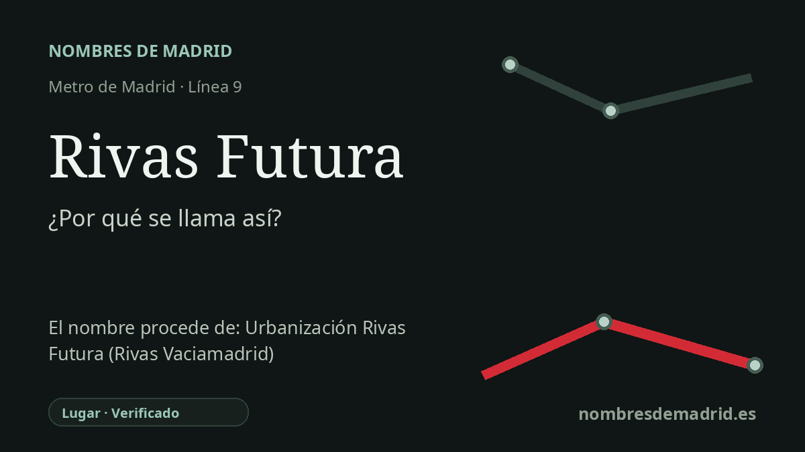

Publicado el · Investigación de Nombres de Madrid · Cómo verificamos cada origen · 7 fuentes consultadas
Respuesta rápida
Rivas Futura debe su nombre al cercano desarrollo urbanístico y comercial Rivas Futura, una zona de expansión de Rivas-Vaciamadrid en los años 2000. La estación abrió el 11 de julio de 2008 como parada intermedia de la línea 9 entre Rivas Urbanizaciones y Rivas Vaciamadrid.
La historia del nombre
Rivas Futura toma su nombre del desarrollo urbanístico y comercial construido alrededor de la estación en Rivas-Vaciamadrid. Es un topónimo moderno: la parada no recuerda a un personaje histórico ni a una aldea antigua, sino al nuevo barrio y complejo comercial al que el Metro debía dar servicio.
El nombre ya estaba vinculado en los años 2000 a un gran proyecto de usos mixtos. El Parque Comercial Rivas Futura se presenta como parte de un macroproyecto junto a H2Ocio, con usos comerciales, empresariales y de ocio junto al corredor de la A-3. La web turística de Madrid describe H2O, inaugurado en 2007, como un centro comercial de unos 50.000 metros cuadrados con restauración, ocio y 13 salas de cine.
La estación abrió a los viajeros el 11 de julio de 2008, no en 2006. Las crónicas de la época indican que los trenes comenzaron a parar allí esa tarde, convirtiéndola en la tercera estación de Metro de Rivas-Vaciamadrid. Se insertó entre las estaciones ya existentes de Rivas Urbanizaciones y Rivas Vaciamadrid, en el tramo de la línea 9B hacia Arganda del Rey.
El proyecto de transporte siguió al crecimiento explosivo del municipio. La propia Agenda Urbana de Rivas señala que el municipio pasó de unos 650 habitantes en 1980 a alrededor de 100.000 en la actualidad, un salto demográfico que transformó su forma urbana y sus necesidades de servicios públicos. Rivas Futura es uno de los nombres nacidos de esa nueva etapa: una marca comercial y urbana de futuro llevada directamente al plano del Metro.
La etimología, por tanto, está bien respaldada en la explicación pública: la estación se llama así por el desarrollo Rivas Futura que la rodea. Lo que queda menos documentado de forma directa es la elección de marca de la palabra “Futura”; las fuentes avalan su relación con un proyecto moderno de expansión, pero no se ha localizado una resolución oficial que explique la intención exacta del término.